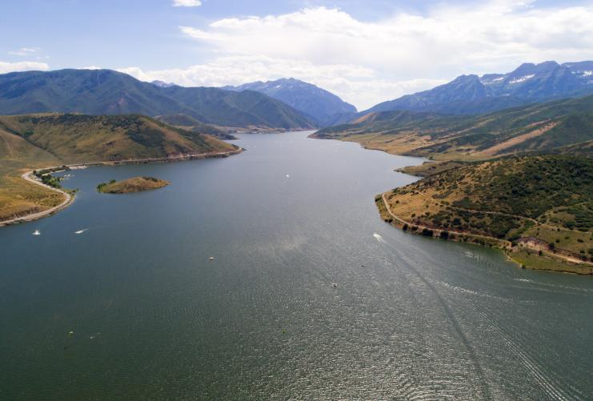
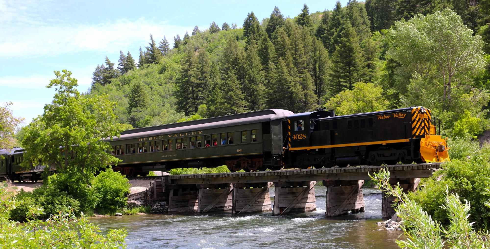

Fig.1 - The Commemorative Air Force Utah Wing Museum is home to a host of historic planes.
Our museum was established in 2009 by four local Utah WWII veterans and CAF members. We are dedicated to the restoration, preservation, and demonstration of the magnificent aircraft that dominated the skies during WWII. Our goal is to perpetuate in the memory and hearts of all Americans the spirit in which these great planes were flown in defense of our nation.
Deer Creek

Fig.1 - Heber Valley's Deer Creek
Windsurf, boat, zip line, swim, and fish on the cool waters of Deer Creek Reservoir. After a day on the water, camp under the night sky at one of several campgrounds, all with spectacular views of nearby Mount Timpanogos.
Heber Valley Railroad

Fig.1 - Heber Valley Railroad
The Heber Valley Railroad is a heritage railroad based in Heber City, Utah. It operates passenger excursion trains along a line between Heber City and Vivian Park, which is located in Provo Canyon. The HVRX carries over 110,000 passengers a year. The railroad line is approximately 16 miles long.